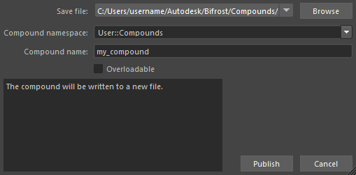

通过发布复合，您可以轻松地在其他图表中重用该复合，以及与其他用户共享该复合。复合发布后，您可以使用“选项卡”(Tab)菜单将其实例添加到任何图表，就像安装的其他节点一样。
如果要保存整个效果（包括图表的顶层及其连接），请将其另存为图表。请参见以图表形式发布效果。
发布的复合保存为 JSON 格式的节点定义文件。
从复合的外部，右键单击复合（而非其中一个端口）并选择“发布复合”(Publish compound)。
根据需要输入信息，然后单击“发布”(Publish)。

选择节点定义文件的位置和名称。 默认位置为您的 Bifrost 用户目录：
仅存储在下拉框中所列位置之一的复合可以添加到图表。除了默认用户位置外，您还可以设置其他复合位置。
所有节点都需要一个名称空间。“选项卡”(Tab)菜单根据节点的名称空间对其进行分类。此外，名称空间还用于区分不同名称空间中名称相同的节点。
此处输入的名称将用作复合实例的默认名称。此外，在参数编辑器中，此名称还作为复合的类型列出，即使复合的实例已被重命名也是如此。
过载是指名称和名称空间与其他节点相同但针对不同数据类型定义的节点。
大多数情况下，不需要将已发布的复合设为可过载。这是因为类型为 auto 的端口可以接受不同类型的连接。
但在某些情况下过载可能会很有用。例如，如果您需要实施不同的子图来针对不同类型计算相同函数，则可以创建一组过载。
要设为可过载，复合不可以具有任何 auto 类型的端口 - 右键单击端口，然后选择“设置值类型”(Set Value Type)进行更改（如有必要）。
此外，针对其他数据类型创建的任何过载节点定义必须具有相同数量、名称和顺序的端口。这些端口只是数据类型不同。